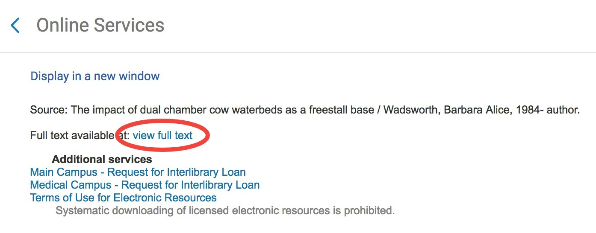
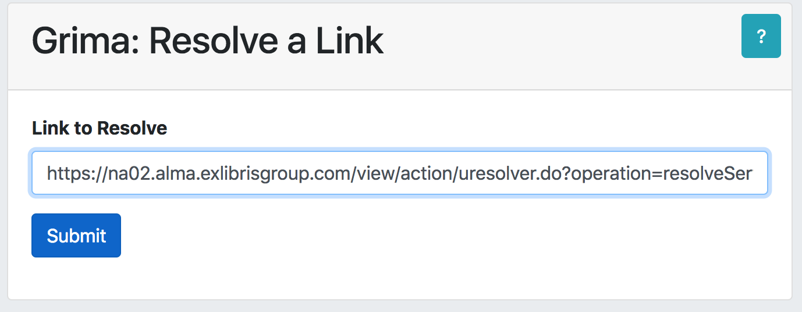
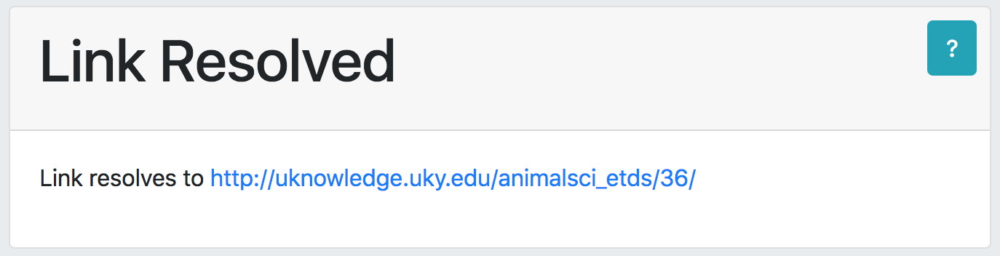

grima - whispering into alma's ear with APIs
This project is maintained by zemkat
This grima resolves a link from Alma preview or Primo display. Rather than the Alma URL, you can see the actual URL it is trying to visit.
Useful for debugging electronic resource access problems.
While editing an Alma portfolio, go to the Linking tab and click the Test Access button. This should show a window like the one that appears for electronic resources in Primo. Right-click the full text link and copy the link address: 
Paste the URL into the grima form: 
A more useful URL will be displayed: 